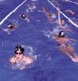
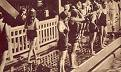

La natación era un deporte muy estimado en la antigua Grecia y Roma, sobre todo como un método de entrenamiento para los guerreros. En Japón ya se celebraban competiciones en el siglo I a.C. No obstante, durante la edad media en Europa su práctica quedó casi olvidada, ya que la inmersión en agua se asociaba con las constantes enfermedades epidémicas de la época. Hacia el siglo XIX desapareció este prejuicio, y ya en el XX la natación se ha llegado a considerar no sólo una forma de supervivencia o de salvar vidas en caso de emergencia, sino también como un sistema valioso de terapia física y como la forma de ejercicio físico general más beneficiosa que existe. Ningún otro ejercicio utiliza tantos músculos del cuerpo y de modo tan intenso. Además, la mayor afluencia de nadadores, así como las mejores técnicas de construcción y calefacción, han aumentado enormemente el número de piscinas públicas al aire libre y cubiertas en todo el mundo. La piscina privada, que fue en un tiempo signo de excepcional privilegio, es cada vez más común.
En la era moderna la natación de competición se instituyó en Gran Bretaña a finales del siglo XVIII. La primera organización de este tipo fue la National Swimming Society, fundada en Londres en 1837. En 1869 se creó la Metropolitan Swimming Clubs Association, que después se convirtió en la Amateur Swimming Association (ASA). El primer campeón nacional fue Tom Morris, quien ganó una carrera de una milla en el Támesis en 1869. Hacia finales de siglo la natación de competición se estaba estableciendo también en Australia y Nueva Zelanda y varios países europeos habían creado ya federaciones. En los Estados Unidos los clubs de aficionados empezaron a celebrar competiciones en la década de 1870.
Los primeros Juegos Olímpicos de la era moderna, celebrados en Atenas, Grecia, en 1896, incluyeron también la natación. En 1908 se organizó la Fédération Internationale de Natation Amateur para poder celebrar carreras de aficionados. La competición femenina se incluyó por primera vez en los Juegos Olímpicos de 1912. Aparte de las Olimpiadas, las competiciones internacionales en Europa han estado patrocinadas por clubs de aficionados a la natación desde finales del siglo XIX. Sin embargo, hasta la década de 1920 estas competiciones no quedaron definidas sobre una base estable y regular. Gran Bretaña había creado algunas competiciones entre las naciones del Imperio Británico antes de 1910. Los primeros juegos oficiales del Imperio Británico, en los que la natación fue un componente importante, se celebraron en Canadá en 1930. La natación juega ahora un papel fundamental en varias otras competiciones internacionales, siendo la más destacada los Juegos Pan-americanos y las competiciones asiáticas y mediterráneas.
Los Campeonatos del Mundo se celebraron por primera vez en 1973 y tienen lugar cada cuatro años. Los Campeonatos de Europa se celebraron por primera vez en Budapest en 1926; hubo cinco competiciones entre 1927 y 1947; de 1950 a 1974 se hicieron a intervalos de cuatro años y desde 1981 tienen lugar cada dos. Hubo una Copa del Mundo en 1979, cuando los Estados Unidos ganaron tanto en la competición masculina como en la femenina. La Copa de Europa se celebró por primera vez en 1969 y desde entonces tiene lugar cada dos años.
La natación es un deporte en el que la competición se centra sobre todo en el tiempo. Es por eso que en las últimas décadas los nadadores se han concentrado en el único propósito de batir récords. Lo que una vez fueron los sorprendentes récords de velocidad de competidores de la talla de Duke Paoa Kahanamoku, Johnny Weissmuller, Clarence "Buster" Crabbe, Mark Spitz, David Wilkie, Shane Elizabeth Gould y Martin López Zubero entre otros, ya han sido, o serán eclipsados por posteriores marcas. Del mismo modo se están batiendo continuamente los récords de distancia y resistencia impuestos por los nadadores de maratón, como es el caso de la nadadora estadounidense Gertrude Caroline Ederle, la primera mujer que cruzó a nado el Canal de la Mancha. En consecuencia, las diferencias que separan a hombres y mujeres dentro de la natación de competición se han reducido mucho; ha descendido la edad en que los nadadores pueden competir con éxito y aún no se han alcanzado los límites físicos de la especialidad.
 